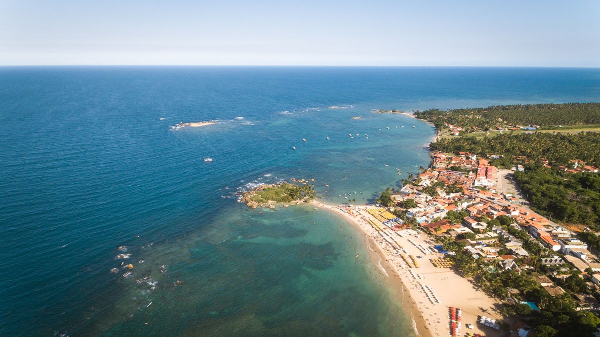

Salvador, Bahia
Nossos passeios
Volta às ilhas
7h30
Tinharé e Boipeba
A partir de R$ 350Tabela oficial de CairuCooler liberado
O passeio de barco mais pedido de Morro de São Paulo: um dia inteiro entre piscinas naturais e as praias mais bonitas de Tinharé e Boipeba. 9h30 às 17h Saída de Morro de São Paulo

Day use
Dia inteiro
Morro de São Paulo
A partir de R$ 290Taxa de embarque R$ 20
Ida e volta no mesmo dia, saindo de Salvador, com tempo para conhecer os principais pontos da ilha. Cerca de 3h de viagem desde o Terminal Marítimo Trajeto semiterrestre

Escuna
Dia inteiro
Frades e Itaparica
A partir de R$ 140Entrada em Frades R$ 34,90
Um dia de escuna pela Baía de Todos-os-Santos, com cerca de duas horas em cada ilha. Saída às 9h do Terminal Marítimo de Salvador Cooler liberado
Litoral Norte
8h
Praia do Forte
A partir de R$ 1409h às 17hSaída de Salvador
Praia do Forte e Guarajuba, duas das praias mais queridas do Litoral Norte, em um só dia. Cerca de 2h em cada praia
Day use
Dia inteiro
Village Itaparica
De Salvador R$ 140De Morro R$ 210
Um dia de descanso na Ilha de Itaparica, com a travessia organizada por nós. Saídas de Salvador e de Morro de São Paulo
Off-road 4x4
Garapuá
Valor sob consultaSaída de Morro de São Paulo
Trilhas de areia em veículo 4x4 até a Praia do Encanto e a enseada de Garapuá, com banho nas piscinas naturais.
Aventura
Quadriciclo
Valor sob consultaSaída de Morro de São Paulo
Você pilota. Um roteiro de quadriciclo por trilhas e praias até Garapuá, com as suas piscinas naturais, e a Ilha de Boipeba.
Ecoturismo
Gamboa
Valor sob consultaSaída de Morro de São Paulo
Falésias de argila na Praia da Gamboa, piscinas naturais para banho e mergulho, praias de areia branca quase desertas e a cozinha local.
Volta à ilha
Boipeba
Valor sob consultaSaída de Boipeba
O passeio mais tradicional de Boipeba: uma volta completa pela ilha, com paradas nos seus pontos mais bonitos e reservados.
Transfer diário
3h
Morro de São Paulo
5 saídas por dia3h desde o terminalTodos os dias
De Salvador a Morro de São Paulo todos os dias do ano, com busca no aeroporto, no hotel ou embarque direto no Terminal Marítimo.
Transfer diário
Ilha de Boipeba
2 saídas por diaTodos os dias
De Salvador à Ilha de Boipeba todos os dias do ano. Fique quantos dias quiser e volte quando for melhor para você.

Sob medida
Transfer privativo
Carro, van ou ônibusNo seu horário
Um veículo só para você, a sua família ou o seu grupo, no horário que você escolher, com motoristas profissionais e experientes.
Nada por aqui
Nenhum passeio combina com os dois filtros ao mesmo tempo.
Do Pelourinho para o mar
Por que a Baía Azul
Buscamos você
No Aeroporto de Salvador, no seu hotel ou direto no Terminal Marítimo. Você diz onde está e nós organizamos o resto, para você e para a sua família.
Gente daqui
Uma equipe experiente, que conhece cada travessia, e guias bilíngues que gostam do que fazem. A viagem começa bem antes de você chegar à praia.
Conforto no caminho
Ônibus executivos com banheiro, TV, ar-condicionado e Wi-Fi, além de barcos, vans e carros privativos modernos. Segurança em cada trecho.
Reserva pelo WhatsApp
Vamos montar a sua viagem
Conte para onde quer ir e em que data. Respondemos pelo WhatsApp com disponibilidade, horário e ponto de encontro. Pagamento por cartão, PIX ou transferência.